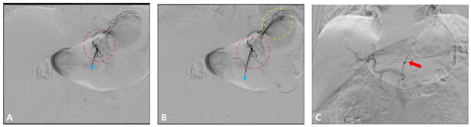

920 — Nút mạch cầm máu: thoát hoạt tính vs giả phình / Embolization
Tags: pattern:nut-mach vung:mach-mau protocol:CTA-DSA
Mức chắc chắn (certainty): tổng hợp y văn (literature synthesis) — nhóm tự biên từ y văn mở, chưa gắn ca nguyên văn đơn lẻ.
1. Tổng quan — đổi hình là đang chảy, giữ hình là túi cũ
- Thoát hoạt tính: thuốc ra ngoài lòng mạch lan theo mô — TẠI SAO đổi hình + lan thì muộn: máu tiếp tục chảy sau thì động mạch.
- Giả phình: túi thông lòng mạch — TẠI SAO giữ hình + rửa song hành ĐMC: thuốc vào-ra cùng nhịp mạch chủ.
- Ngưỡng thấy: CTA 0,3–0,5 mL/phút nhạy hơn DSA 0,5–1,0 — TẠI SAO CTA trước DSA: thấy chảy chậm + bản đồ đường vào.
2. Gamut chảy máu cấp (Gamut)
- Đổi hình + lan muộn + tụt HA: thoát hoạt tính — nút mạch chọn lọc cấp cứu.
- Giữ hình + rửa cùng ĐMC: giả phình — coil/bơm tắc túi (kể cả khi đã cầm!).
- Sỏi/clip/phân + chỉ 1 thì: giả thoát — đối chiếu non-contrast, đừng nút oan.
- Ho lạc chỗ/vú trong ho máu: tìm mạch lạc chỗ — CT ngực + DSA phế quản.
3. Bảng so sánh phân biệt (ma trận đối chiếu)
| Thực thể (entity) | Hình ảnh điển hình | Chốt vào (rule-in) | Chốt loại (rule-out) | Gợi ý xác nhận |
|---|---|---|---|---|
| Thoát hoạt tính | Đổi hình + lan thì muộn + tụt HA | CTA 0,3 + lan = đang chảy | Giữ hình → giả phình | Nút mạch cấp cứu |
| Giả phình | Túi giữ hình + rửa cùng ĐMC | Cùng nhịp ĐMC + cổ túi | Lan muộn → thoát | Coil tắc túi/cổ |
| Giả thoát | Sỏi/clip/phân + 1 thì + không lan | Non-contrast có sẵn | 3 pha đều lan → thật | Đối chiếu, không nút |
| Ho máu | Phế quản + lạc chỗ/vú trong | Tìm hết mạch nuôi | Bỏ sót → tái phát | Nút + mổ khi thất bại |

(A–B) chọn lọc nhánh trái + điểm chảy; (C) tắc sau nút. Nguồn: Jeong et al., Cancers 2026 Fig. 3, CC BY 4.0.4. Protocol chảy máu
- CTA 3 pha (non-contrast bắt buộc!) + DSA + nút chọn lọc (coil/hạt/keo) + hồi sức song song; ho máu thêm CT ngực tìm lạc chỗ.
flowchart TD
A[Chảy máu cấp] --> B{CTA 3 pha?}
B -->|Đổi hình + lan| C[Thoát: nút cấp cứu]
B -->|Giữ hình| D[Giả phình: coil túi]
B -->|1 thì (sỏi/clip)| E[Giả: không nút]
5. Cạm bẫy
- Bỏ non-contrast nút oan sỏi/clip/phân — 3 pha là luật.
- Giả phình đã cầm vẫn vỡ muộn — túi còn là còn nguy cơ, tắc chủ động.
- Ho máu bỏ sót lạc chỗ tái phát — vú trong + liên sườn + dưới hoành đều có thể nuôi.
6. Tự lượng giá — Blind Quiz
Ca 1 — K dạ dày nôn máu + tụt HA. Đọc DSA.
- Hỏi: nút mạch gì? Thành công đánh giá thế nào? Bước tiếp nếu tái phát?
Bấm để hiện đáp án
- Dấu hiệu (findings): chọn lọc nhánh vị trái + mất điểm chảy sau nút (C).
- Chẩn đoán (diagnosis): TAE cầm máu u thành công — theo dõi tái phát (nội soi/xạ/mổ khi thất bại; cầm máu là cầu nối hóa trị!).
- Nguồn: Jeong et al., Fig. 3, CC BY 4.0.
Ca 2 — Điểm sáng ruột chỉ 1 thì + sỏi niệu quản cùng vị trí non-contrast: thoát hay sỏi? (Bảng mục 3.)
Bấm để hiện đáp án
- Sỏi (giả thoát): không nút — đối chiếu non-contrast là luật.
Bài liên quan chéo
- 901 – Tổng quan IR
- 900 – Đại cương IR (an toàn)
- 140 – Chấn thương tạng (thoát thuốc)
Không dùng để chẩn đoán độc lập khi chưa có người hướng dẫn.